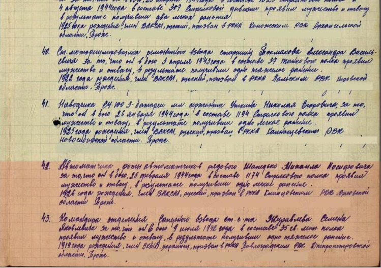
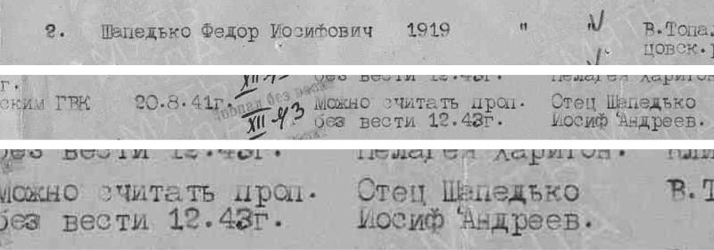
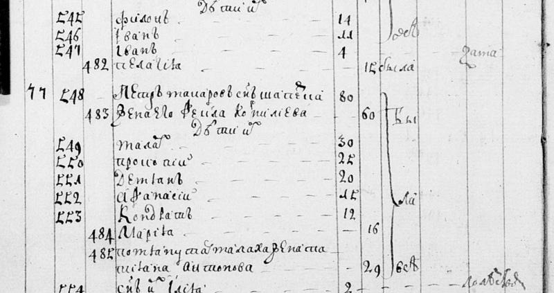
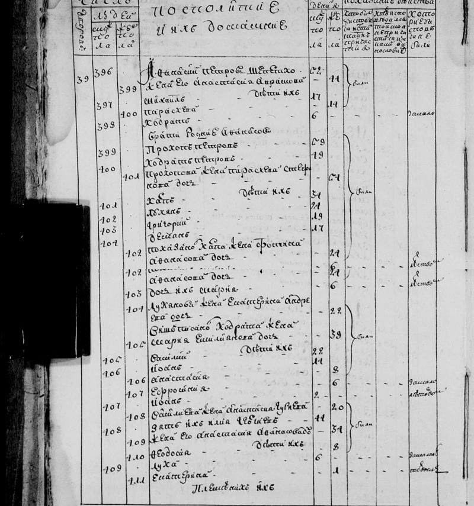
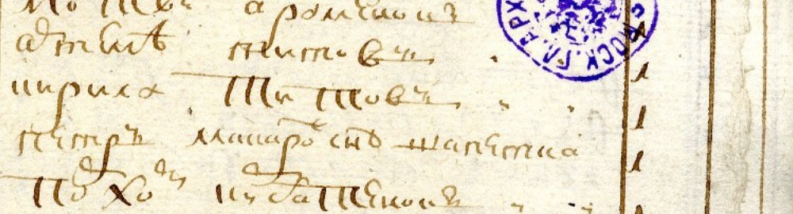
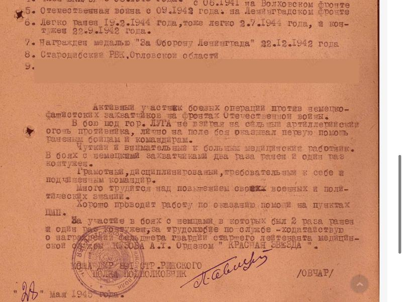
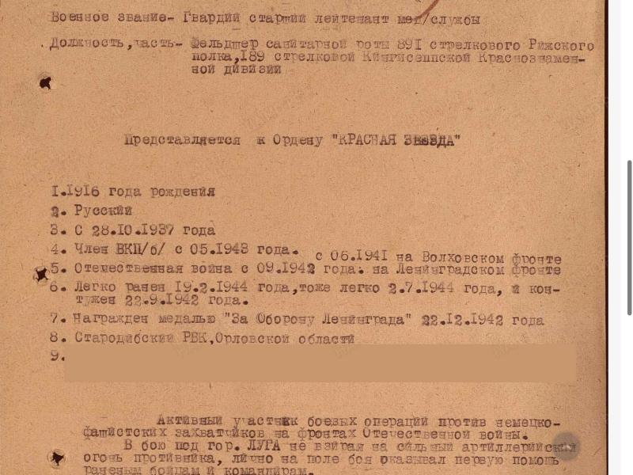
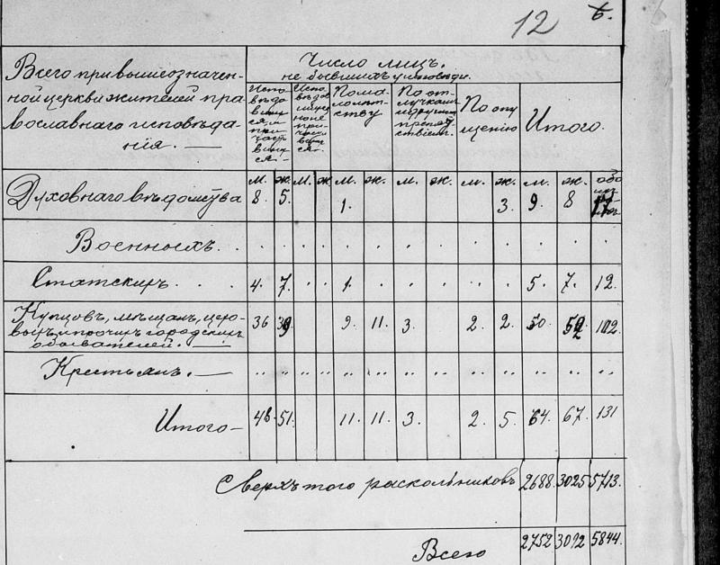

Коротко
- Дедушка Михаил Иосифович Шапедько воевал. Его призвали в 17 лет, осенью 1943 года. Он был автоматчиком, в феврале 1944-го был ранен и получил медаль «За отвагу».
- Прадедушка Александр Тимофеевич Кузов прошёл всю войну военным фельдшером. Он воевал под Ленинградом, был дважды ранен и контужен, награждён орденом Красной Звезды.
- Прадедушка Иосиф Шапедько тоже нашёлся в документах. Его сын Фёдор, брат дедушки Михаила, пропал без вести на войне в 1943 году.
- Лужки, откуда родом бабушка Раиса, — старинное село староверов. В 1914 году там жило больше 5700 староверов и всего 131 прихожанин единоверческой церкви.
- Род Шапедько живёт в Великой Топали больше 300 лет. В списке прихожан 1742 года записан Пётр Макарович Шапетка (около 1662 г. р.) с сыном Кондратом — верх древа Алексея. Родословная книга дальней родственницы независимо подтверждает линию от Ивана и Ефима до дедушки Михаила и папы.
- Пока ничего не известно о прадедушке Михаиле Жгутове и прабабушке Таисии Поляковой. Их имена должны быть в свидетельстве о рождении дедушки Виктора.
Папина линия: Шапедько из Великой Топали
Фамилия Шапедько очень редкая и почти вся «живёт» в одном селе — Великой Топали, между Клинцами и Климовом. В военных архивах нашлось полтора десятка Шапедько, и все они оттуда. Значит, это одна большая семья, давно осевшая на одном месте.
Дедушка — Михаил Иосифович Шапедько
родился в 1926 году в Великой Топали
Осенью 1943 года, когда Брянщину освободили от немцев, дедушку призвали в армию: ему было 17 лет. Он попал автоматчиком в 1174-й стрелковый полк. В бою 25 февраля 1944 года его ранило, и за этот бой ему дали медаль «За отвагу». Вот как об этом написано в наградном списке:
«Автоматчика роты автоматчиков рядового Шапедько Михаила Иосифовича за то, что он в бою 25 февраля 1944 года в составе 1174 стрелкового полка проявил мужество и отвагу, в результате получил одно лёгкое ранение. 1926 года рождения, член ВЛКСМ, русский, призван в РККА Клинцовским РВК Орловской области»
РККА — Рабоче-крестьянская Красная армия; РВК — районный военный комиссариат (военкомат).
После госпиталя дедушка вернулся на фронт и в конце войны служил в самоходной артиллерии на 1-м Украинском фронте. Войну он закончил сержантом. есть документ
О дедушке рассказывает и родословная книга «История рода Шапедько»: её написала дальняя родственница по папиной линии, Татьяна Ивановна Буракова, по рассказам своей ветви семьи. По книге его тоже забрали на фронт в 17 лет, сразу после освобождения Топали, и он был ранен. Среди его детей там назван и Сергей — это ваш папа. Книга и древо Алексея составлены независимо друг от друга, а сходятся они с документами. подтверждено

Откуда это известно: имя, отчество, 1926 год рождения и место рождения — село Великая Топаль — записаны в военных документах; год рождения — со слов родителей; других Михаилов Иосифовичей Шапедько в военных базах нет.
Прадедушка — Иосиф Шапедько
в 1949 году жил в Великой Топали
Прадедушку Иосифа мы нашли через его сына Фёдора, брата дедушки Михаила. Фёдор родился в 1919 году, ушёл на фронт в августе 1941-го и в декабре 1943-го пропал без вести. В 1949 году военкомат составлял списки пропавших и записал о нём всё, что знал. Строка списка целиком:
«Шапедько Федор Иосифович, 1919 г. р., беспартийный, рядовой, уроженец В. Топаль Клинцовского района. Призван Клинцовским ГВК 20.8.41 г. Можно считать пропавшим без вести 12.43 г. Ближайший родственник: отец Шапедько Иосиф Андреев[ич], В. Топаль»
Так что Иосиф пережил войну и в 1949 году жил дома. есть документ
1919 год. В «Алфавитном списке мобилизованных граждан, принятых на военную службу по Великотопальской волости» Новозыбковского уездного военного комиссариата Иосиф записан так:
«№ 16/2203. Шапедько Иосиф Андрианович. Местожительство: Великая Топаль. Год рождения: 1892. Сколько времени служил в старой армии: 4 года. Род войск в старой армии: пулемётчик. Звание и должность в старой армии: ефрейтор. Когда принят на службу в Красную Армию: 5 мая. Когда и в какую часть был направлен: 5 мая»
Брянский областной архив, ф. Р-839, оп. 1, д. 142. Расшифровка опубликована в группе села Великая Топаль ВКонтакте. Снимка страницы с этой записью в группе нет, поэтому строка приведена по расшифровке. Отсюда год рождения Иосифа — 1892 — и его отчество «Андрианович». есть документ
Как жил — по документам
- 1892 — год рождения (список мобилизованных 1919 г.).
- До 1919 — 4 года в «старой», то есть царской, армии: пулемётчик, ефрейтор (там же).
- 5 мая 1919 — принят на службу в Красную армию (там же).
- 1919 — родился сын Фёдор; 1926 — сын Михаил, дедушка (военные документы сыновей).
- 1922 — домохозяин в Великой Топали: записан в списках плательщиков масло-яичного и трудгужевого налогов (ГАБО, ф. Р-934, оп. 1, д. 25; ф. 805, оп. 1, д. 73).
- 1923–1924 — хозяйство «Шапетько Иосифа Андрианова»: 5 едоков (поселенный список плательщиков сельхозналога, ГАБО, ф. Р-805, оп. 1, д. 157).
- 1949 — жив, живёт в Великой Топали (список военкомата о пропавшем без вести сыне Фёдоре).

Жену Иосифа звали Марина; её девичья фамилия пока неизвестна. Марину вспоминает и родословная книга: на старой семейной фотографии она подписана «Марина — жена его сына Иосифа Андриановича». со слов семьи
Прапрадедушка — Андриан Ефимович Шапедько
Что о нём записано в разных источниках:
- Документы 1919–1923 годов: «Шапедько Иосиф Андрианович» (список мобилизованных, 1919), «Шапедько Осип Андрианович» (трудгужналог, 1922), «Шапетько Иосиф Андрианов» (сельхозналог, 1923–1924).
- Древо Алексея (со слов родителей): отец Иосифа — Андриан, сын Ефима; Андрей — брат Андриана.
- Родословная книга Т. И. Бураковой (по рассказам другой ветви рода): Андриан и Андрей — сыновья Ефима; Иосиф — сын Андриана. Под старой фотографией подпись: «Марина — жена его сына Иосифа Андриановича».
- Список военкомата 1949 года: отец Фёдора записан как «Шапедько Иосиф Андреев.».
- Военные документы о Михаиле Шапедько 1910 г. р. из Великой Топали: в одних записях его отчество «Андреевич», в других — «Андрианович» и «Андриянович».
1922 год — налоговый список села. В июле 1922 года волость составила «Список граждан села Великая Топаль, не выполнивших масло-яичного налога» — по одному домохозяину на двор, всего 487 дворов. Шапетьки в нём записаны так (номера по списку):
«151 Шапетько Максим Захаров; 152 Шапетько Павел Захаров; 228 Шапетько Андрей Ефим[ов]; 233 Шапетько Андриан Ефим[ов]; 235 Шапетько Иван Андр[…]; 237 Шапетько Иосиф Андр[…]»
Отчества в списке сокращены: «Андр.» может значить и Андреевич, и Андрианович. Брянский областной архив, ф. Р-934, оп. 1, д. 25, л. 161–165 об. Список целиком переписан в родословной книге Т. И. Бураковой и выложен на форуме ВГД (тема «Жители Новозыбковского уезда», 12.05.2021). есть документ
1898 год — рождение сына Иакова. В метрической книге Преображенской церкви Великой Топали, в части «О родившихся», запись № 71:
«22 октября [родился], 25 октября [крещён] — Иаков. [Родители:] Солдат из крестьян села Великой Топали Андриан Евфимов Шапедька и законная жена его Иулиана Игнатова. Оба православные. [Восприемники:] Того же села солдат из крестьян Димитрий Филиппов Боглай и солдатка Феодора Стефанова Тесленко»
Брянский областной архив, ф. 250, оп. 1, д. 3 (метрическая книга за 1898 год). Расшифровка Т. И. Бураковой, опубликована в группе села ВКонтакте вместе со снимками книги. Записи № 71 и № 54 сверены со снимками. В той же книге записано рождение сына Александра у «Андрея Евфимова Шапедьки и законной жены его Домникии Дионисиевой». В списке участников Великой Отечественной войны из Великой Топали есть «Шапедько Яков Андрианович». есть документ
1908 год — покупка земли. В постановлении Черниговского отделения Крестьянского поземельного банка от 21 февраля 1908 года о ссуде товариществу 133 домохозяев Великой Топали на покупку земли у княгини М. П. Долгоруковой записан домохозяин «Шапедько Адриан Евфимович»: в семье 5 мужчин и 2 женщины. (Документ приведён в группе села ВКонтакте, глава «Великая Топаль при М. П. Долгоруковой, 1900–1914».)
1922–1923 годы — списки налогоплательщиков. В «Подворном списке плательщиков трудгужналога» 1922 года (ГАБО, ф. 805, оп. 1, д. 73) подряд записаны «Шапедько Андриан Ефимович» и «Шапедько Осип Андрианович», а в «Поселенном списке плательщиков единого сельхозналога» 1923–1924 годов (ГАБО, ф. Р-805, оп. 1, д. 157) — «Шапетько Андриан Ефимов» и «Шапетько Иосиф Андрианов». есть документ
Как жил — по документам
- 1898–1899 — «солдат из крестьян», то есть крестьянин, отслуживший в армии. Так он записан в метрических книгах: при рождении сына Иакова (1898) и как поручитель на трёх свадьбах односельчан (1899).
- 1898 — жена Иулиана Игнатова; родился сын Иаков (22 октября). Иосиф родился в 1892 году, но его метрика не найдена, поэтому записано ли имя его матери, неизвестно; в древе Иулиана стоит с пометкой «возможно».
- 1908 — вместе со 132 другими домохозяевами села покупает землю у княгини М. П. Долгоруковой через Крестьянский поземельный банк. В семье 5 мужчин и 2 женщины; скота: мелкого 11, коров 2, лошадей 2; покупает 2 десятины 3 сажени; просит ссуду 80 [рублей] (постановление Черниговского отделения Крестьянского поземельного банка от 21.02.1908, № 52).
- 1922 — домохозяин, платит масло-яичный и трудгужевой налоги (налоговые списки 1922 г.).
- 1923–1924 — хозяйство «Шапетько Андриана Ефимова»: 8 едоков (поселенный список плательщиков сельхозналога).
Дальше вглубь — до XVII века
По древу Алексея, выше Андриана мужская линия идёт ещё на семь поколений:
Ефим и его отец Иван подтверждаются документом. В 1862 году крестьяне Великой Топали выбирали уполномоченных для выкупа земли у княгини Голицыной. Приговор сельского схода целиком:
«1862 года мая 28 дня, мы нижеподписавшиеся Черниговской губернии Новозыбковского уезда ВеликоТопальской волости, временнообязанные крестьяне, поселенные на землях владения Ея Сиятельства княгини Варвары Сергеевны Голицыной, селения Великой Топали, быв в полном собрании сельского схода, в числе более двух третей домохозяев, имели посуждение о переходе с сдельной повинности на оброк и вместе с тем заявлением нашего согласия на выкуп предоставленной нам по уставной грамоте в постоянное пользование надела усадебной оседлости и прочих угодий, и о избрании из среды нашей уполномоченных для составления выкупного договора, с уполномоченным от владелицы Его Сиятельством Князем Павлом Павловичем Голицыным, побуждении чего мы в сем единогласно Приговорили: Так как по уставной грамоте владелица Ея Сиятельство княгиня Варвара Сергеевна Голицына предоставляет нам выкупать как усадебную, так и прочие угодия, то мы изъявляем на это полное свое согласие и переходим тотчас на оброк, избираем из среды себя для составления и подписания за нас выкупного договора с уполномоченным от владелицы сыном ея отставным Гвардии Полковником Его Сиятельством князем Павлом Павловичем Голицыным, шесть человек уполномоченных временнообязанных крестьян нашего селения: Степана Лукьянова, Якова Павлова Молчановых, Павла Андреева Боглая, Степана Антонова Беличева, Степана Исаакова Сидаренка и Ефима Иванова Шапетьку, людей честного и добропорядочного поведения вполне заслуживающих общественного доверия, которые по выкупному договору имеют право входить во всякие сделки и где следует подписываться и что ими по сему делу будет учинено, в том мы спорить и прекословить не должны и не будем, в том на подлинном и подписались»
Российский государственный исторический архив, ф. 577, оп. 47, д. 1166, л. 57. Текст приведён в родословной книге и в группе села ВКонтакте. Под выкупным договором стоит: «…и за неграмотных Степана Антонова Белычева, Степана Исаакова Сидорка, Ефима Иванова Шапетьку и Павла Андреева Боглаева по их личной и рукаданной просьбе подписался Степан Молчанов». «Временнообязанные» — бывшие крепостные, которые после отмены крепостного права ещё выкупали землю.
То, что Андриан — сын Ефима, тоже совпадает в книге и в древе Алексея. подтверждено
Самый старый документ — 1742 год. В церковном списке прихожан записана семья Петра Макаровича Шапетки, 80 лет, то есть он родился около 1662 года. С ним жена Фёкла Корнилиевна и дети: Малах, Прокопий, Демян, Афанасий, Кондрат (12 лет) и Мария. Запись в скане целиком:
«77. Петр Макаров сын Шапетка — 80. Жена его Фекла Корнилиева — 60. Дети их: Малах — 30, Прокопий — 25, Демян — 20, Афанасий — 15, Кондрат — 12, Мария — 16. Невестка его, Малахова жена, Татиана Антонова — 29. Сын ее Илия — 2»
«Петр Макаров сын» значит Пётр, сын Макара. Это ровно верх древа Алексея — Макар → Пётр → Кондрат, записанный тогда, при жизни этих людей. Подтверждает и родословная книга: братья Прокоп, Афанасий и Кодрат Петровичи живут в Топали и в 1771 году. есть документ

1781 год — семья Кондрата. В списке прихожан Великой Топали за 1781 год три брата Петровича живут одним двором, № 39. Запись в скане:
«Афанасий Петров Шепетко — 52. Жена его Анастасия Аврамова — 44. Дети их: Михаил — 17, Параскева — 14, Кодрат — 6. Братья родные Афанасовы: Прокоп Петров — 59, Кодрат Петров — 49. Прокопова жена Параскева Стефанова дочь — 54. Дети их: Карп — 34, Лукьян — 24, Григорий — 19, Демьян — 17. Карпова жена Фотиния Афанасова дочь — 24, дочь их Мария — 6. Лукьянова жена Екатерина Андреева дочь — 22. Вышеписанного Кодрата жена Мария Емельянова дочь — 39. Дети их: Василий — 22, Иоанн — 11, Анастасия — 8, Ефросиния — 6, Иоанн — 2. Васильева жена Анастасия Гурьева — 20. Зять их Илья Георгиев — 44, жена его Анастасия Афанасова дочь — 34. Дети их: Феодосия — 8, Лука — 6, Екатерина — 1»

1721 год. В «Книге переписной» 1721 года по местечку Тапал среди «мужитцких дворов» Саввы Рагузинского записан «Петр Макаров син Шапетка». В этой переписи дворы Топали разделены на «старшинский», «казатцкие» и «мужитцкие»: мужицкие — это дворы крестьян (посполитых), которые не несли казацкой службы и были подданными владельца местечка, графа Саввы Рагузинского (Архив внешней политики Российской империи, ф. 124, оп. 1, д. 62, л. 67; скан выложен на сайте Историко-документального департамента МИД; расшифровка исследователя jrserg совпадает с подлинником).

1764 год. Ревизия Стародубского полка, Топальская сотня:
«Демян Шепетко — 45. Брати его Афанас — 35, Кондрат — 30. Син Апанасов Федор — 7. Кондратов син Васил — 5»
ЦГИАК Украины, ф. 51, оп. 3, д. 19348 (расшифровка jrserg, форум ВГД).
1767 год. Подворная опись Топальской сотни:
«В оном живёт Дамиан Шапетка, 50 лет, здоров, родимец здешний посполитой. Жена его София 45 лет. Дети их дочери: Акулина, 17 лет. Настасия, 12 лет. Евдокия, 9 лет. Братья Демеана родные: 1. Афонасий, 40 лет. Жена его Марфа, 30 лет. Здоровы. Дети их: Фёдор, 12 лет. Михей, 3 года. Евдокия, 6 лет. 2-й брат Кондрат, 33 года. Жена его Васса, 30 лет. Дети их: Василий, 6 лет. Мария, 11 лет. Мать их Фёкла, 80 лет, по старости слаба»
ЦГИАК Украины, ф. 57, оп. 1, д. 110 (снимки на FamilySearch; расшифровка опубликована в группе села ВКонтакте). В 1742 году жена Петра Шапетки — «Фекла Корнилиева», 60 лет; в 1767 году «мать их Фёкла, 80 лет» живёт с сыновьями. Значит, Фёкла — мать Кондрата. Мать Василия, судя по описи 1767 года («Жена его Васса… Дети их: Василий, 6 лет»), — Васса. В 1781 году жена Кондрата записана уже как Мария Емельянова дочь, 39 лет: видимо, это вторая жена, документа о браке нет. В том же 1781 году у Василия Кондратовича жена Анастасия Гурьева, 20 лет; кто мать Фёдора Васильевича, документ не говорит, поэтому в древе она с пометкой «возможно».
1805 год — Фёдор Васильевич и его сын Иван. Метрическая книга Преображенской церкви за 1805 год:
«23 сентября. От крестьянина жителя топальского Фёдора Васильевича Шапетко и жены его Агафии Демьяновны Баглаевой родился сын Иван. Крещён 23 сентября священником Филиппом Лемешевичем. Восприемником оному младенцу от святого крещения был житель топальский крестьянин Прокоп Моисеевич Шаколо»
Брянский областной архив, ф. 141, оп. 1, д. 5. Расшифровка Т. И. Бураковой, опубликована в группе села ВКонтакте. Запись сверена со снимком книги: в подлиннике «Феодора Васильева сына Шапетки и жены его Агафии … Боглаевой». В той же книге записаны дети Кондрата: «Степан Кондратович Шапетко» с женой Варварой Кирилловной Масловой и «Анастасия Кондратьевна Шапетько», жена Ивана Трофимовича Сидорко. есть документ
Как жили — по документам
- Пётр Макарович Шапетка (около 1662 г. р.). В 1721 году — хозяин «мужицкого» (крестьянского, не казацкого) двора; такие дворы принадлежали владельцу Топали графу Савве Рагузинскому, и крестьяне были его подданными. В ревизии 1740 года его двор записан среди «малогрунтовых», то есть с небольшим наделом. В 1742 году ему 80 лет; он в разделе «посполитые» (крестьяне, не казаки); жена Фекла Корнилиева, 60 лет; сыновья Малах (30), Прокопий (25), Демьян (20), Афанасий (15), Кондрат (12), дочь Мария (16).
- Кондрат Петрович (около 1730–1734 г. р.). В 1767 году живёт одним двором с братьями Дамианом и Афанасием: «родимец здешний посполитой». Во дворе: изба, 2 амбара, 2 клети, «олейницкая» (маслобойня), 2 хлева, сарай, баня, гумно с деревянным овином. Пашни — одна «чверть», сеют рожь; огород под коноплю; лесного сенокоса на 20 возов, болотного на 10; скота: 4 лошади, 6 овец, 3 свиньи; «на консистенцию» (постой войск) платят 2 рубля в год. В 1781 году — тот же общий двор № 39, вместе с братьями Афанасием и Прокопом.
- Фёдор Васильевич Шапетко. В 1805 году — «крестьянин житель топальский»; жена Агафия Демьяновна Баглаева; в этом году у них родился сын Иван, а сам Фёдор стал крёстным сына Василия Замесова.
- Ефим Иванович Шапетька. В 1862 году — временнообязанный крестьянин княгини В. С. Голицыной; сход выбрал его одним из шести уполномоченных «людей честного и добропорядочного поведения» для выкупа земли. Сам он был неграмотным: за него расписался Степан Молчанов.
Что получается по документам. В древе Алексея: Кондрат → Василий → Фёдор → Иван → Ефим. В документах: у Кондрата есть сын Василий (1764, 1767, 1781); в 1805 году у Фёдора Васильевича Шапетко родился сын Иван; в 1862 году в Великой Топали жил Ефим Иванов Шапетька. Документ, где Ефим Иванович записан вместе со своим отцом, пока не найден.
Получается, что род Шапедько живёт в Великой Топали больше трёхсот лет. Старое написание фамилии — Шапетка, потом Шапетько, а позже Шапедько.
Бабушкина линия: Фещенко
Бабушка — Наталья Васильевна Шапедько, урождённая Фещенко
26 февраля 1932, Великая Топаль — июнь 2023
Бабушка Наталья родом из того же села, что и дедушка Михаил. Её отец — Василий Фещенко, мать — Матрёна, дед — Семён, прадед — Лаврентий. со слов семьи
1898 год. В метрической книге Преображенской церкви Великой Топали, запись о рождении № 19:
«1 марта [родилась], 1 марта [крещена] — Евдокия. [Родители:] Крестьянин села Великой Топали Семион Лаврентиев Фещенко и законная жена его Ольга Гаврилова. Оба православные. [Восприемники:] Того же села солдат из крестьян Митрофан Наумов Белик и крестьянка Евдокия Андреева Лайкова»
Брянский областной архив, ф. 250, оп. 1, д. 3. Расшифровка Т. И. Бураковой в группе села ВКонтакте. Василий Семёнович родился в 1909 году, через одиннадцать лет после этой записи, поэтому была ли Ольга Гаврилова его матерью, неизвестно; в древе она с пометкой «возможно». «Фещенко Семен Лавренов» записан и в поселенном списке плательщиков сельхозналога 1923–1924 годов (ГАБО, ф. Р-805, оп. 1, д. 157). есть документ
Семён Лаврентьевич — как жил по документам
- 1898 — «крестьянин села Великой Топали», жена Ольга Гаврилова, родилась дочь Евдокия (1 марта).
- 1922 — домохозяин, в списке не выполнивших масло-яичный налог (№ 202).
- 1923–1924 — хозяйство из 3 едоков (поселенный список плательщиков сельхозналога).
В том же налоговом списке 1922 года (о нём — выше, у Андриана) под № 202 записан домохозяин «Фещенко Семен Лавренов», то есть Семён Лаврентьевич. Других Фещенко с отчеством Лаврентьевич в списке нет. есть документ
В военных архивах есть записи о Василии Семёновиче Фещенко, 1909 года рождения, уроженце Великой Топали: в 1941 году он призван в Ставропольском крае, в графе «жена» в одном документе записана Елена Стефановна Алимова, в другом — Любовь Краснова. О том, тот ли это Василий, что в древе Алексея, сами документы ничего не говорят. есть документ
Мамина линия: Жгутовы из Климова
Дедушка — Виктор Михайлович Жгутов
22 июня 1943 — 4 февраля 1993, Климово
Дедушка Виктор родился в Климове в 1943 году, когда посёлок ещё был под немцами: его освободили только в сентябре 1943-го. Его родители — Михаил Жгутов и Таисия Ивановна Полякова (её отец — Иван Поляков). Больше о них семья ничего не знает. со слов семьи
В военных архивах подходящего Михаила Жгутова нет. Значит, либо он не погиб на войне, либо не воевал: архивы, открытые в интернете, в основном про погибших и награждённых. Проще всего найти прадедушку и прабабушку через свидетельство о рождении дедушки Виктора: там записаны оба родителя, полностью, с отчествами. Если оно не сохранилось, копию можно запросить в ЗАГСе Климовского района.
Мамина линия: Кузовы и Кожемяки из Лужков
Лужки — село в Стародубском районе, примерно в 40 км к востоку от Климова. Его основали староверы около 1700 года. В начале XIX века Лужки стали центром особого течения староверов — «лужковцев». Когда в 1822 году власти разрешили староверам держать своих священников при условии, что те будут вести церковные книги, лужковцы отказались. Записывать своих детей в казённые книги они не хотели. Поэтому о таких семьях в старых архивах обычно очень мало сведений. По рассказам семьи, линия прабабушки Варвары — из староверов.
Бабушка — Раиса Александровна Супрун, урождённая Кузова
6 марта 1942, Лужки — 14 июля 2021, Климово
Бабушка Раиса родилась в Лужках в разгар войны и потом переехала в Климово. Супрун — фамилия по мужу: в древе Алексея рядом с бабушкой указан Алексей Супрун. Это был её первый брак. со слов семьи
Прадедушка — Александр Тимофеевич Кузов
сентябрь 1916 — октябрь 1982 · из Лужков
Прадедушка был военным фельдшером и служил в армии с 1937 года, ещё до войны. С первых дней войны он был на Волховском фронте, потом под Ленинградом, всю войну в одной дивизии. В бумагах о награждении написано:
«Активный участник боевых операций против немецко-фашистских захватчиков на фронтах Отечественной войны. В бою под гор. Луга, не взирая на сильный артиллерийский огонь противника, лично на поле боя оказывал первую помощь раненым бойцам и командирам. Чуткий и внимательный к больным медицинский работник. В боях с немецкими захватчиками два раза ранен и один раз контужен. Грамотный, дисциплинированный, требовательный к себе и подчинённым командир. Много трудится над повышением своих военных и политических знаний. Хорошо проводит работу по оказанию помощи на пунктах ПМП. За участие в боях с немцами, в которых был 2 раза ранен и один раз контужен, за трудолюбие по службе — ходатайствую о награждении фельдшера гвардии старшего лейтенанта медицинской службы Кузова А. Т. орденом „Красная Звезда“. Командир 891 стр. Рижского полка подполковник Овчар. 28 мая 1945 года»
ПМП — полковой медицинский пункт.

Награды: орден Красной Звезды, медали «За оборону Ленинграда» и «За победу над Германией». Из армии он ушёл в конце 1946 года гвардии старшим лейтенантом медицинской службы. есть документ

День рождения у семьи — 12 сентября, в армейских документах — 15 сентября 1916 года. Такая разница бывает часто; точную дату покажет свидетельство о рождении или паспорт. Его отец — Тимофей Кузов; отчество «Тимофеевич» в документах это подтверждает.
Прабабушка — Варвара Савельевна Кузова, урождённая Кожемяка
10 декабря 1923 — 9 ноября 2012 · из Лужков
Прабабушка Варвара — из староверов. Её родители — Савелий и Анна Кожемяка. Фамилию пишут по-разному, и «Кожемяка», и «Кожемяко»; как было в документах, покажет свидетельство о браке или паспорт. со слов семьи
Мы проверили список прихожан единоверческой церкви Лужков за 1914 год. В ней числилось всего 131 человек в 25 дворах, а в итоговой строке священник записал: «сверх того раскольников 5713». Значит, почти всё село — около 98 % жителей — были староверами, которых в церковные списки не вносили. Кузовых и Кожемяк среди прихожан единоверческой церкви в этом списке нет. есть документ

Поэтому в дореволюционных церковных книгах записей о Кузовых и Кожемяках ждать не стоит. Где их искать:
- Рождение прабабушки Варвары (декабрь 1923 г.) записано уже в советском ЗАГСе. Книги рождений 1923 года по Воронокской волости, куда входили Лужки, хранятся в Брянском областном архиве (фонд Р-3083, дела 445–447). В интернете их нет, нужен запрос.
- Рождение прадедушки Александра (1916 г.) должно быть в книге староверческой общины. С 1906 года такие книги вели сами общины. Книгу общины Лужков в каталоге Брянского архива найти не удалось, но есть книга соседней староверческой общины Елионки за 1910–1918 годы — её стоит проверить.
- Личное дело офицера. Прадедушка был кадровым офицером, а в личных делах офицеров обычно лежит автобиография с именами родителей, жены и детей. Его можно запросить в Центральном архиве Министерства обороны.
Где жила семья
Все предки, о которых мы что-то знаем, жили совсем рядом — в одном уголке Брянщины, на расстоянии 20–40 км друг от друга. До революции это была Черниговская губерния.
Военные дороги
- Прадедушка Александр Кузов: призван в армию в Стародубе в 1937 году → с 1941-го Волховский фронт → с 1942-го Ленинградский фронт, бои под Лугой → после Победы служил до конца 1946 года.
- Дедушка Михаил Шапедько: призван в Клинцах осенью 1943 года → пехота, ранен в феврале 1944-го → госпиталь → снова на фронт, самоходная артиллерия, 1-й Украинский фронт.
- Фёдор Шапедько, брат дедушки: ушёл на фронт в 1941-м, пропал без вести в декабре 1943-го.
Что пока непонятно
- Последние два звена от Кондрата к Ефиму. По документам уже есть: у Кондрата сын Василий (1764, 1767, 1781), у Фёдора Васильевича Шапетко в 1805 году родился сын Иван, в 1862 году жил Ефим Иванов Шапетька. Не найдено двух записей: где Фёдор назван сыном именно Василия Кондратовича и где Ефим записан вместе со своим отцом Иваном.
- Прадедушка Василий Семёнович Фещенко: годы жизни и судьба. В военных базах есть Василий Семёнович Фещенко 1909 года рождения из Великой Топали, но по документам не видно, тот ли это человек: жена у него записана другая.
- Всё о прадедушке Михаиле Жгутове и прабабушке Таисии Поляковой.
- Девичьи фамилии прабабушек Марины (жены Иосифа) и Матрёны (жены Василия Фещенко).
Вопросы для разговора
Самое важное
- Есть ли дома свидетельство о рождении дедушки Виктора Жгутова, его паспорт или военный билет? Там записаны его родители.
- Какие ещё свидетельства о рождении, браке, смерти лежат дома? Достаточно их сфотографировать.
- Дедушка Михаил: что рассказывал о войне и о ранении? Сохранились ли медаль, удостоверение к ней, фото в форме? Когда он умер и где похоронен?
- Какая девичья фамилия у прабабушки Марины?
Люди
- Что известно о прадедушке Михаиле Жгутове: откуда он, кем работал, воевал ли, жил ли с семьёй?
- Что известно о прабабушке Таисии Поляковой: где жила, кем работала, были ли у неё братья и сёстры?
- Прадедушка Василий Фещенко: уезжал ли он из Топали до войны, например на Ставрополье? Вернулся ли с войны? Какая девичья фамилия у прабабушки Матрёны?
- Что помнят о прапрадедушках Тимофее Кузове и Савелии Кожемяке?
Вера и Лужки
- Была ли в Лужках молельня или церковь? Где крестили детей?
- Остались ли дома старые иконы, книги, лестовки (староверские чётки)? Иногда на последних страницах старых книг записывали, кто когда родился и умер.
Переезды и жизнь
- Когда и почему Шапедько переехали из Великой Топали в Климово? Когда бабушка Раиса переехала из Лужков? Как познакомились бабушка Раиса и дедушка Виктор?
- Как семья пережила оккупацию в 1941–1943 годах? Уходил ли кто-то в партизаны, угоняли ли кого-то в Германию?
- Кем работали прадеды и прабабушки? Есть ли трудовые книжки, грамоты?
- Откуда, по семейным рассказам, фамилия Шапедько? Кто записал длинную цепочку от Макара до Ефима?
- Кто ещё из родни может что-то помнить или хранить фотографии?
Что можно сделать дальше
- Поговорить с родителями по вопросам выше и сфотографировать документы, которые есть дома. Это самое быстрое и самое полезное.
- Запросить документы в ЗАГСе. Если каких-то свидетельств дома нет, копию можно получить в ЗАГСе: Климовского района — по Шапедько и Жгутовым, Стародубского — по Кузовым. Их выдают прямым потомкам, если показать цепочку свидетельств о рождении. Могу подготовить текст заявления.
- Запросить личное дело прадедушки Кузова в Центральном архиве Министерства обороны: там его автобиография и имена родителей.
- Посмотреть старые церковные записи Великой Топали и Лужков, которые выложены в интернете. По ним можно найти рождение прадедушки Иосифа, имя его отца и предков Кузовых и Кожемяк до революции.
- Запросить в районном архиве похозяйственные книги сельсоветов Великой Топали и Лужков за 1930–1950-е годы. В них по каждому двору записан состав семьи с годами рождения.
Откуда взяты сведения
Для тех, кто захочет проверить сам. ЦАМО — Центральный архив Министерства обороны; его документы открыты на сайтах «Память народа» и «Мемориал».
- Древо, которое составил Алексей со слов родителей (январь 2026), и рассказы родителей (ноябрь 2026).
- Дедушка Михаил: наградной список 1976-го самоходного артиллерийского полка от 28.04.1945 (ЦАМО, фонд 33, опись 690306, дело 3603); список 18-го запасного полка, 1944 (ЦАМО, ф. 8297, оп. 28626, д. 4 и 8); учётная запись военкомата. Страница на «Памяти народа».
- Прадедушка Иосиф и Фёдор: список пропавших без вести Клинцовского военкомата от 01.03.1949 (ЦАМО, ф. 58, оп. 977522, д. 77). Страница на «Мемориале».
- Родословная книга «История рода Шапедько», Т. И. Буракова (Кондратенко), Минск, 2023. В ней приведены документы 1771, 1781, 1862 и 1922 годов. В этот отчёт взято только то, что совпадает с другими источниками.
- Лужки, 1914: исповедная ведомость Успенской единоверческой церкви посада Лужков (Государственный архив Черниговской области, ф. 679, оп. 1, д. 536), на FamilySearch: фильм 007778837, кадры 20–24.
- Отчества Андреевич/Андрианович у других Шапедько: записи о Михаиле Шапедько 1910 г. р. на «Мемориале» и «Памяти народа» (ЦАМО, ф. 58, оп. 977520, д. 104 и др.). Страница.
- Василий Семёнович Фещенко, 1909: ЦАМО, ф. 58, оп. 18004, д. 271 и 380. Страница.
- Прадедушка Александр Кузов: наградной лист к ордену Красной Звезды, учётная карточка офицера и другие документы, всего 13. Страница на «Памяти народа».
- О Лужках и староверах-лужковцах: статья о селе; о лужковском согласии. Списки прихожан единоверческой церкви Лужков 1856–1914 (Государственный архив Черниговской области, ф. 679): каталог.
- 1781 год: исповедная ведомость Преображенской церкви Великой Топали, двор 39 (Государственный архив Черниговской области, ф. 679, оп. 1, д. 328, листы 131–178), на FamilySearch: фильм 007779538, кадр 915.
- 1742 год: исповедная ведомость, двор 77, «Петр Макаров сын Шапетка» (Государственный архив Черниговской области, ф. 679), на FamilySearch: запись, фильм 007779555, кадр 941.
- Группа села Великая Топаль ВКонтакте (Т. И. Буракова, А. А. Бодылева): расшифровки и снимки метрических книг 1805, 1898, 1899 гг., описи 1767 г., списка мобилизованных 1919 г., книг ЗАГС 1922 г., налоговых списков 1922–1924 гг.: группа села Великая Топаль.
- 1922 год: список граждан села Великая Топаль, не выполнивших масло-яичного налога, 20.07.1922 (Брянский областной архив, ф. Р-934, оп. 1, д. 25, л. 161–165 об.); расшифровка в родословной книге и на форуме ВГД.
- Брянский областной архив: книги ЗАГС Стародубского уезда 1921–1925 (фонд Р-3083), церкви Стародубского уезда (фонд 255): каталог фондов.
- Великая Топаль: статья о селе; списки прихожан Преображенской церкви 1742–1781: каталог.
Вопросы для разговора частично основаны на опроснике из открытого навыка family-history (лицензия MIT). Подробные рабочие таблицы исследования лежат в той же папке, что и этот файл.